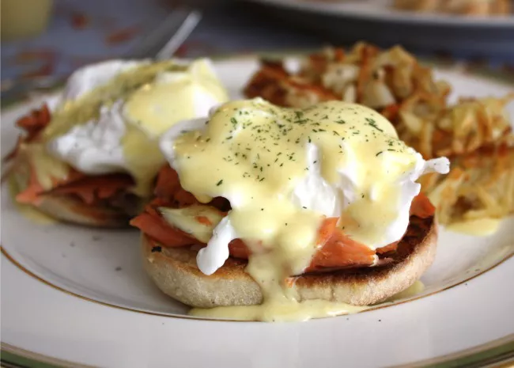

Eggs Benedict

Ingredients
Hollandaise Sauce:
- 4 Egg Yolks
- 3 1/2 T. Lemon Juice
- 1 T. Water
- 1/8 t. Worcestershire Sauce
- 1 pinch White Pepper
- 1 t. Hot Sauce
- 1 C. Butter, melted
Eggs Benedict:
- 1/4 t. Salt
- 1 t. White Vinegar
- 8 Eggs
- 8 Slices Canadian-style Bacon
- 4 English Muffins, split
- 2 T. Butter
Directions
- Make the Hollandaise: Whisk egg yolks, lemon juice, 1 tablespoon of water, Worcestershire sauce, and white pepper in the top of a double boiler over simmering water. Add melted butter, 1 or 2 tablespoons at a time, while whisking yolks constantly. If Hollandaise begins to get too thick, add a teaspoon or two of hot water. Continue whisking until all of the butter is incorporated. Whisk in salt, then remove from heat. Place a lid on the pan to keep sauce warm.
- Make the eggs Benedict: Fill a large saucepan with 2 to 3 inches of water and bring to a boil. Reduce heat to medium-low, pour in vinegar, and keep water at a gentle simmer. Crack an egg into a small bowl then gently slip egg into simmering water, holding the bowl just above the surface of water. Repeat with the remaining eggs. Cook eggs until whites are firm and yolks have thickened but are not hard, 2 1/2 to 3 minutes. Remove eggs from water with a slotted spoon, dab on a kitchen towel to remove excess water, and place onto a warm plate.
- Meanwhile, set an oven rack about 6 inches from the heat source and preheat the oven's broiler. Brown bacon in a medium skillet over medium-high heat.
- Toast English muffins on a baking sheet under the preheated broiler.
- Spread toasted muffins with softened butter and top each one with a slice of bacon, followed by one poached egg. Place 2 muffins on each plate and drizzle with Hollandaise sauce. Sprinkle with chopped chives and serve immediately.